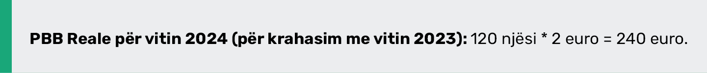

Konceptet si ndryshimi mes PBB-së reale dhe nominale, si dhe rritja ekonomike në periudha afatshkurtër dhe afatgjatë, janë thelbësore për të kuptuar se si funksionon një ekonomi dhe si matet performanca e saj.
Ndryshimi midis GDP Reale dhe Nominale
PBB (Prodhimi i Brendshëm Bruto) Nominale është një tregues i vlerës totale të mallrave dhe shërbimeve të prodhuara në një ekonomi gjatë një periudhe të caktuar, pa e korrigjuar për inflacionin.
Pra, PBB nominale është i ndikuar nga ndryshimet në çmimet e mallrave dhe shërbimeve, dhe si pasojë mund të reflektojë në një rritje të çmimeve, edhe pse sasia e prodhimit mund të ketë mbetur e pandryshuar.
PBB Reale është një masë e PBB-së që është korrigjuar nga ndikimi i inflacionit. Ky matës ofron një pasqyrë më të saktë të rritjes ekonomike pasi përjashton efektet e çmimeve të ndryshueshme dhe përqendrohet në vlerën e vërtetë të prodhimit.
Për të arritur PBB-në reale, përdoret një indeks çmimi (siç është indeksi i çmimeve të konsumit) për të korrigjuar ndryshimet në çmime.
Shembull:
Supozoni se në vitin 2023, një ekonomi ka prodhuar 100 njësi oriz, dhe çmimi i një njësi orizi është 2€.
Tani, në vitin 2024, ekonomia ka prodhuar 120 njësi oriz (pra, ka rritur prodhimin), dhe çmimi për një njësi orizi është rritur në 3€.
Për të krahasuar rritjen e prodhimit dhe jo vetëm ndryshimin e çmimeve, përdorim PBB-në reale, e cila korrigjon ndikimin e ndryshimit të çmimeve.
Për PBB reale në vitin 2024, përdorim çmimin e vitit 2023 (2€ për njësi) dhe shumëzojmë me sasinë e prodhuar në vitin 2024 (120 njësi):

Përmbledhje:
- PBB Nominale (2023): 200€
- PBB Nominale (2024): 360€
- PBB Reale (2024, bazuar në çmimet e vitit 2023): 240€
Shpjegimi i ndryshimit
- PBB Nominale ka rritur vlerën, jo vetëm për shkak të rritjes së sasisë së
prodhimit, por edhe për shkak të rritjes së çmimit të orizit (nga 2€ në 3€).
Kjo tregon se vlera totale e prodhimit është rritur për 160€ (nga 200€ në 360€). - PBB Reale, megjithatë, është llogaritur duke përdorur çmimet e vitit 2023 (2€ për njësi), për të eliminuar ndikimin e inflacionit. Kjo tregon se prodhimi ka rritur sasinë, por vlera e tij është rritur me vetëm 40€ (nga 200€ në 240€), duke pasqyruar vetëm rritjen e sasisë së prodhimit dhe jo çmimet.
Rritja ekonomike dhe PBB Reale
Rritja Ekonomike është një objektiv kyç i politikave makroekonomike dhe lidhet ngushtë me rritjen e PBB-së reale. Ajo përfaqëson rritjen e qëndrueshme të prodhimit të mallrave dhe shërbimeve gjatë një periudhe të gjatë.
Kjo ndihmon në përmirësimin e mirëqenies, uljen e papunësisë dhe rritjen e nivelit të jetesës. Për rritje të qëndrueshme, ekonomia duhet të investojë në faktorë si teknologjia, arsimi, infrastruktura dhe kapitali njerëzor.
Rritja e PBB-së reale tregon përparimin e një ekonomie, duke pasur parasysh prodhimin pa ndikuar ndryshimet e çmimeve.